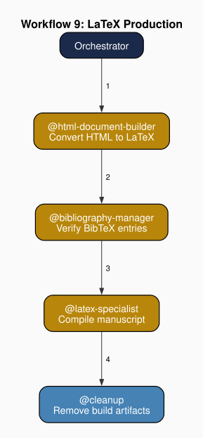
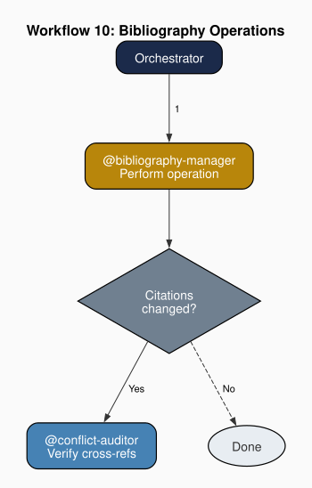

Chapter 15: The Domain Agents
Part III: The Agents at Work
1. Functional Agents and Domain Agents
The distinction between functional and domain agents marks a structural division within any agent team. Functional agents govern: they enforce constitutional rules, audit for consistency, route tasks through established workflows, and maintain the documentation infrastructure that keeps the team's knowledge base aligned with its current plan. Domain agents produce: they generate the work product the team exists to create. The functional/domain division is a distinction in authority and scope, not in capability. A functional agent can compose text, and a domain agent can detect an anomaly. What defines each type is the function it is authorized to perform. This division is the agent-team expression of a principle that runs through the Austrian tradition on productive organization: governance of an enterprise and execution within that enterprise are analytically and institutionally distinct activities. Chapter 3 develops this distinction through Smith’s and Hayek’s frameworks. The present chapter applies it specifically to the domain side of the division.
The functional/domain division maps onto the framework introduced in Chapter 1: interpretation, reorganization, and action in ongoing exchange with the environment. Domain agents perform the action phase: composing prose, verifying citations, generating the work product that constitutes the team’s primary output. Functional agents perform the interpretation and reorganization phases: governance agents read the system’s current state against its intended state, auditors detect violations and inconsistencies, and documentation-maintenance agents reorganize the shared knowledge base so that domain agents encounter a coherent, current environment in each subsequent cycle. The division thus partitions phases in the productive cycle, not only tasks. Domain agents cannot efficiently perform their own governance, which includes the interpretive work of auditing, verifying, and maintaining the environment in which they act, without diverting productive capacity from its primary purpose. Functional agents convert that maintenance burden into a systematic organizational function, ensuring that the interpretation and reorganization phases are reliably performed.
Teams require both types. A team composed exclusively of functional agents governs an empty enterprise: no output is produced, governance has nothing to act upon, and the constitutional machinery regulates nothing. A team composed exclusively of domain agents produces, but its production accumulates inconsistencies that no agent is authorized to address. Documentation drifts from the current plan. Version conflicts between files go undetected. Format errors propagate unremarked. The functional agents are the institutional infrastructure through which domain agents' productive knowledge can be exercised sustainably. Lachmann's analysis of capital complementarity applies directly (Lachmann 1956): governance capabilities and productive capabilities are complements, not substitutes. Removing either type does not economize on the remaining type's effort: it degrades it. The correct unit of analysis is the team as a coordinated combination, not the individual agent's contribution considered in isolation from the organizational whole.
A production chain is a sequence of specialized transformations that converts raw inputs into a final work product. The inputs may be theoretical sources, research notes, architectural specifications, or design requirements of other kinds. The transformations are specialized, which includes content composition, prose-quality audit, within-section cohesion repair, voice calibration, format conversion, figure generation, compilation, and citation verification, and each requires a knowledge type that differs from the others in character.
The value of a production chain is cumulative. Each transformation adds a quality dimension that prior transformations neither provide nor can assess their own output against. The chain's output exhibits qualities that no single transformation could produce, because each transformation's contribution depends on domain knowledge held exclusively by the agent that performs it. No single agent can hold all domains simultaneously, and an agent that attempted to do so would hold each superficially.
I designed the pool so that domain agents do not form a rigid assembly line through which every work product passes at every stage in a fixed order. They form a pool of production capabilities that the orchestrator draws upon in workflow-specific sequences. Some workflows engage all domain agents in succession. Others require only a subset. A revision workflow may return to the composition stage after calibration without passing through format conversion. A standalone citation-verification workflow may engage only the source-verification agent while leaving everything else idle. The pool design enables reuse: the same agent that performs its function in one workflow performs that same function in any other workflow where it is needed, without modification or reconfiguration. Pool membership is permanent. Deployment is task-specific.
In this project, eight domain agents form the production chain for an academic book. The book-content-expert drafts chapter prose in HTML, working from Chapter Briefs assembled by chapter-expert agents and from theoretical sources accumulated during the research phase. The expert-critic audits drafted prose for structural weaknesses, purposeless prose, LLM-generated patterns, and logical inconsistencies, routing flagged passages back to the book-content-expert for revision. The argument-weaver repairs within-section cohesion failures, including disjoint paragraphs, broken given-new chains, and missing argumentative spine. The voice-style agent calibrates drafted prose to James Caton's authorial voice, evaluating output against ten inductively derived voice features and a catalog of twenty-eight AI-generated prose signatures to avoid. The html-document-builder validates the HTML structure of chapter files and converts them to LaTeX. The graphviz-expert produces publication-quality directed graphs, which includes agent-team structure diagrams, workflow visualizations, and architectural figures, depositing PDF and SVG output in the figures/ directory. The latex-specialist assembles and compiles the full manuscript. The bibliography-manager maintains the citation database and enforces a two-tier citation-verification protocol. Together, these eight agents constitute the production chain through which the book's final typeset output is generated.
2. Voice and Style Enforcement
Any project requiring consistent output tone across a multi-agent production chain faces a voice-coherence problem. When multiple agents contribute prose, which includes drafting chapters, revising on feedback, incorporating corrections from external review, the output may drift from the intended style. The drift is not random: each agent's language model has characteristic generative patterns, and those patterns differ from any given target voice in predictable ways. Across a long work with many contributors and many revision cycles, the cumulative effect of small tonal shifts is a text that reads as a production committee rather than as a single author. Voice enforcement is the architectural solution: a dedicated agent whose sole function is to model the target voice and evaluate all contributed prose against that model. The voice-enforcement agent contributes coherence, not content. It applies a consistent evaluative standard that no content-contributing agent can reliably apply to its own output.
Voice authority must be exclusive. When more than one agent can issue voice rulings, when the drafting agent and a reviewing agent independently assess tone against possibly different criteria, the content-producing agent receives competing feedback with no principled decision procedure for resolving the disagreement. It must choose between conflicting instructions on grounds unrelated to the quality of either voice judgment. Exclusive authority eliminates this coordination failure. A single agent issues voice rulings, all other agents defer to it on voice questions, and the content agent's revision path is unambiguous. The principle generalizes beyond voice: authority over any quality-enforcement function must be singular to be operative. Distributed authority produces the formal appearance of enforcement without its substance.
Voice models are most useful when built inductively from the work of the designated author or style exemplar, rather than prescribed from abstract principles of good writing. Abstract prescriptions describe what, in general, good academic prose should do. They do not describe how a specific person writes. An inductive voice model, derived by analyzing patterns across a body of existing work, captures the idiosyncratic regularities that make a particular voice recognizable: characteristic sentence constructions, vocabulary drawn from a specific intellectual tradition, argumentative structures that recur across papers written over different periods on different topics. These are the features that make a voice distinctive, and they are the features that cannot be deduced from general prescriptions. An effective voice model describes how an author actually writes, not how a general theory says they should write.
Voice modeling proceeds through a recognizable cycle. The voice model is built by analyzing the designated author's existing work, absorbing tacit stylistic patterns through immersion in published prose. Those tacit patterns are then extracted into explicit features, ten voice codes, twenty editorial-pattern codes, and twenty-eight AI-tell codes, each documented in a reference file that makes the previously implicit recognizable and auditable. These codes are integrated into a three-pass audit applied to every drafted chapter.
3. Format Bridging and Unidirectional Content Flow
Production workflows frequently involve multiple document formats. A project may author content in one format and publish in another, or may require intermediate formats at specific stages of processing. When two or more formats coexist across an extended production lifecycle (not as temporary artifacts but as persistent files that multiple agents read and write) the project requires a policy about which format is canonical: the authoritative source from which all other representations derive. Without a canonical designation, edits accumulate independently in multiple formats. The team eventually holds two or more versions of the same content with no clear authority about which is correct, and reconciling the divergent versions requires effort that the divergence itself was not forced to bear. The canonical-format policy is an organizational rule, not a technical preference, whose purpose is to prevent a class of consistency failure that format plurality makes probable through normal usage.
Unidirectional content flow implements the canonical-format policy. Designate one format as the authored output: agents compose, revise, and finalize content exclusively in this format. All other formats are generated: they derive from the canonical source through a defined conversion procedure applied by a domain agent. Changes flow in one direction only: from the canonical format through conversion to each generated format. No edits originate in a generated format. The unidirectional rule is not enforced by technical lock, since it would be physically possible for an agent to edit a generated file. Its force is constitutional: violations are process defects rather than content changes, are logged and corrected, and the correction always restores the generated file from the canonical source rather than accepting the generated-file edit as authoritative. The rule's value is that it eliminates the reconciliation problem entirely. When changes can originate only in the canonical format, the question of which version is authoritative never arises.
Format bridging requires at least two logically separable functions: conversion and compilation. Conversion translates content between formats. It applies a defined mapping from the markup conventions, structural elements, and inline annotations of the canonical source to their equivalents in the generated format. Compilation assembles converted pieces into a complete artifact suitable for distribution or publication. The two functions may be combined in one agent or split across two depending on their relative complexity. Where conversion is straightforward and compilation involves multiple interdependent passes, the combination favors concentrating agent capacity on compilation. Where both functions are complex enough to benefit from specialized knowledge, splitting them enables each to be performed by an agent whose relevant expertise is not diluted by responsibility for the other.
In this project, HTML chapters are the canonical format from which LaTeX files are generated. The html-document-builder performs conversion: it validates the HTML structure of each chapter file against the project's template and translates HTML elements to LaTeX according to a defined mapping, which includes <section id="..."> to \section{}\label{}, <cite class="citation" data-key="key"> to \cite{key}, and so on, depositing the result in the manuscript/ directory. The latex-specialist performs compilation: it assembles the converted .tex files into a root document with the correct preamble and chapter-inclusion order, integrates the bibliography via BibTeX, and runs the compiler and BibTeX across all re-compilation passes needed to resolve labels and cross-references. The constitutional rule that HTML chapters are the primary authored output prohibits any agent from editing .tex files directly. All corrections originate in the HTML source and arrive in the manuscript directory as regenerated LaTeX.

4. Source Verification and Zero-Fabrication Discipline
Any scholarly production chain must enforce citation integrity. In a multi-agent team where language models generate prose, the risk of fabricated references is structural rather than exceptional. It is a predictable consequence of how language models are trained, not a rare failure mode. Language models produce plausible-looking citations because they have been trained on bibliographic text and can recombine its conventions fluently. A fabricated citation may have a plausible author name, a plausible title, and a plausible journal, each assembled from patterns in the training data rather than from any publication that exists. The plausibility of a fabricated citation is what makes it dangerous. A citation that looks wrong is caught by inspection. A citation that looks right passes inspection without additional checking. A source-verification agent whose function is to maintain the citation database and verify every citation against it converts this structural risk into a tractable problem. No citation enters the work product without passing through a mandatory verification checkpoint.
Two-tier verification is the appropriate model because different failure modes require different checks. First-tier verification confirms that a citation key exists in the project's citation database: that the reference corresponds to a record actually present rather than to a typo or an invented key that happens to follow the database's naming convention. Second-tier verification confirms that the database record is accurate: that the author, title, year, and publication venue stored in the entry match the actual publication. The two tiers address distinct failures. Tier one catches citations that were invented from whole cloth and have no corresponding database entry. Tier two catches citations that exist in the database but whose metadata was itself fabricated or transcribed with errors. A plausible-looking database entry is not a verified one. Tier-two verification is a necessary component of adequate verification, not an optional refinement of tier one.
The zero-fabrication policy carries the weight of a constitutional constraint rather than an editorial preference. A style guide specifies preferences and recommendations that agents are expected to follow but whose violation is a quality lapse rather than a rule violation. A constitutional constraint establishes a rule whose breach invalidates the output and requires correction before the work proceeds. When citation integrity is elevated to constitutional status, verification is mandatory at every point where citations enter the system, in every workflow, at every drafting stage, rather than a post-hoc check applied after the full work is assembled. This elevation is the appropriate response to the severity of citation fabrication in academic publishing. A fabricated citation that survives to publication is a credibility-destroying event whose damage is not recoverable by later correction. Constitutional enforcement makes such survival structurally improbable rather than merely unlikely.
5. Domain Agents in This Project
The domain agents in the illustrative team instantiate the general principles developed above. Each agent corresponds to one of the production-chain functions identified in §1: content composition, prose-quality audit, within-section cohesion repair, voice calibration, format conversion, figure generation, compilation, and citation verification.
The Book-Content Expert
The composition agent is the entry point to the production chain. Two architectural features define it. First, it separates research from drafting into distinct activation modes, because interleaving inquiry and composition fragments both. Second, it delegates all quality-enforcement functions to the agents constitutionally responsible for them. Both delegations instantiate the exclusive-authority principle that prevents any single stage from diffusing its productive capacity across adjacent quality dimensions.
In this project, the book-content-expert drafts chapter text in HTML, working from a Chapter Brief prepared by the chapter-specific expert agent for the chapter being drafted. Each brief specifies the chapter's thesis, section structure, required citations, and the theoretical-to-architectural mappings the prose must render. During the research-and-assembly phase, the content expert reads theoretical sources, agent files, and prior chapters. During the drafting phase, it composes prose from the accumulated material. Voice authority belongs to the voice-style agent. Format authority belongs to the html-document-builder.
The Voice-Style Agent
The voice-enforcement agent holds the inductively derived voice model and exercises exclusive constitutional authority over voice rulings: the guarantee, developed in §2, that prevents competing feedback from fragmenting the content agent's revision path. Because the model is extracted from the author's published work rather than prescribed from abstract principles of good writing, it captures the idiosyncratic regularities that make a particular voice recognizable rather than merely correct.
In this project, the voice-style agent models James Caton's academic writing through a three-priority audit: twenty E-series codes that identify architectural editorial patterns, twenty-eight A-series codes that identify AI-generated prose signatures, and ten V-series codes that capture Caton's inductively derived voice features. After the book-content-expert drafts a chapter, the orchestrator invokes the voice-style agent to run all three passes and specify required revisions. When the conflict-auditor detects a voice-consistency issue between chapters (a logged conflict instance (BK-prefix identifier)), it logs the finding and routes it to the voice-style agent for evaluation rather than assessing the deviation directly. The editorial-pattern codes take highest priority, followed by AI-tell codes, then voice-fidelity codes. The constitutional rule establishing exclusive voice authority prohibits any other agent from issuing voice deviation rulings or modifying the voice-sample files.
The HTML-Document-Builder
The format-bridging agent combines structural validation with format conversion: the two-function approach that §3 identifies as efficient when the conversion is straightforward enough not to warrant a dedicated conversion agent. It implements the unidirectional content-flow rule. All changes originate in the canonical authored format, and if the source contains structural anomalies that would produce incorrect output, the agent halts rather than generating a silently defective file.
In this project, the html-document-builder validates each chapter file against the structural template, which includes correct <article id="ch:..."> wrapping, properly nested <section id="sec:..."> elements, and well-formed <cite class="citation" data-key="..."> markup, then converts validated chapters to LaTeX according to the project's element-by-element mapping. The builder generates LaTeX output but never edits it, treating HTML as the only writable source.
The LaTeX Specialist
The compilation function, which §3 distinguishes from conversion, assembles format-converted pieces into a complete publishable artifact. The compilation agent's scope is deliberately downstream: it does not touch chapter content, does not modify the conversion agent's output, and does not originate any change that would need to flow back to the canonical source. Content-level errors encountered during compilation are reported upstream through the format-conversion agent, preserving the canonical-format rule that all corrections originate in the authored format.
In this project, the latex-specialist receives converted .tex chapter files from the html-document-builder and assembles them into a compilable root document: a preamble with required packages, the chapter files included in correct order, and bibliography integration via BibTeX. It compiles the assembled manuscript across as many passes as needed to resolve labels and cross-references. Errors from content-level problems, broken cross-references, unresolvable citation commands, are reported back through the builder to the HTML source.
The Graphviz Expert
A production chain that generates a scholarly book requires not only text but figures, which includes directed graphs, architectural diagrams, workflow visualizations, whose quality standards differ from those that govern prose. Figure production is a domain specialization: the knowledge required to produce publication-ready diagrams (layout algorithms, font sizing for print reproduction, node–edge contrast ratios, output format selection) is distinct from the knowledge required to draft chapter text or to compile a manuscript. This distinction maps onto the content/tool-domain subtype developed in Chapter 3: the graphviz expert is a tool-domain agent, holding expertise organized around a production medium rather than the project's substantive output. Assigning figure production to a dedicated domain agent applies the same division-of-labor principle that justifies separating composition from voice calibration or format conversion from compilation. The figure-production agent holds knowledge that no other agent in the chain needs to hold, and its output enters the manuscript as a finished artifact that downstream agents incorporate without modification.
In this project, the graphviz-expert produces publication-quality directed graphs for the book using the Graphviz DOT language through the Python graphviz library. Its scope is the figures/ directory: every diagram depicting agent-team structure, workflow sequences, or architectural relationships is generated by this agent. The graphviz-expert enforces rendering standards, which includes Helvetica typeface, 11–12 point node labels, deterministic layout via fixed random seeds, simultaneous PDF and SVG output, that ensure figures reproduce legibly at book-page dimensions. The orchestrator invokes the graphviz-expert whenever a chapter requires a new diagram or an existing figure must be revised to reflect changes in the agent team's composition or workflow structure.
The Bibliography Manager
The source-verification agent, whose architecture §4 develops, is the sole authority over the citation database and applies two-tier verification to every citation entering the work. Tier one confirms key presence, and tier two confirms metadata accuracy. An independent enforcement layer, the security agent's citation-integrity rule, operates as a constitutional backstop that catches citations bypassing the primary verification workflow.
In this project, the bibliography-manager maintains references/bibliography.bib as the citation database. Tier-one verification confirms key presence before a draft is finalized. Tier-two verification confirms metadata accuracy before the entry is treated as authenticated. The bibliography-manager also maintains three topical focus-area clusters, which includes Agent-Based Models and Computation, Knowledge, Speech Acts, Community, and Governance, and Capital, Institutions, and Transaction Costs, that organize the book's primary intellectual genealogy by topic, supplying the book-content-expert with pre-organized source material during the research phase. The security agent's S-3 rule provides the independent enforcement layer: citations reaching the security checkpoint without bibliography-manager verification are flagged as constitutional violations.

6. Knowledge Concatenation in Production Workflows
Each agent contributes a knowledge type that it holds exclusively, which includes composition knowledge, prose-quality knowledge, within-section cohesion knowledge, voice knowledge, structural and format-conversion knowledge, figure-generation knowledge, compilation knowledge, citation-verification knowledge, and no other agent holds an equivalent supply of any of these types. Five of these, which includes composition, prose-quality assessment, cohesion repair, voice calibration, and citation verification, are content-domain knowledge types, organized around the project's substantive output. Three, which includes format conversion, figure generation, and compilation, are tool-domain knowledge types, organized around a production medium that recurs across projects. The knowledge types layer sequentially rather than aggregating in a central node, with each stage's contribution depending on having received the prior stage's output in the form that the prior stage's expertise produced.
Each agent's depth of domain knowledge is possible because the agent's productive scope is bounded. The production chain converts bounded depth into cumulative layering: each specialist contributes where its knowledge is most needed, receives from its predecessor output it is optimally positioned to evaluate and advance, and delivers to its successor output in the form the successor requires.
Each class of defect is caught at the stage where the agent with the deepest relevant knowledge operates. The expert-critic catches structural weaknesses invisible to the composition agent that produced them. The voice agent catches tonal deviations invisible to the argument-weaver that restored cohesion. No quality dimension falls through the gaps between stages, because each stage covers a dimension that no other stage addresses.
Workflow 3 (Chapter Drafting) illustrates knowledge concatenation in practice. The relevant chapter-expert agent assembles a Chapter Brief specifying the chapter's thesis, section structure, and planned citations. The bibliography-manager confirms that all planned citation keys resolve before the draft begins. The book-content-expert drafts the chapter in HTML, drawing on accumulated research from theoretical sources and prior chapters. The expert-critic agent then audits the accepted draft for structural weaknesses, purposeless prose, LLM-generated patterns, and logical inconsistencies, routing flagged passages back to the book-content-expert for revision. The argument-weaver audits sections for disjointedness and repairs within-section cohesion failures, restoring argumentative spine where the expert-critic's corrections have disrupted paragraph-to-paragraph flow. The voice-style agent then audits in three passes: first for editorial patterns (E-01 through E-20), then for AI tells (A-01 through A-28), then for voice deviations (V-01 through V-10), and specifies revisions where required before the output advances. The html-document-builder validates the HTML structure of the revised chapter and generates the LaTeX conversion. Each stage adds a quality dimension the prior stage neither provides nor assesses: the content expert does not evaluate structural weakness patterns. The expert-critic does not repair cohesion. The argument-weaver does not audit voice fidelity. The voice agent does not evaluate HTML structure. The orchestrator routes each handoff and manages returns to prior stages when a downstream finding requires upstream correction. The quality of the final output is the cumulative product of the chain's sequential specialization, not of any single agent's independent contribution.
7. Domain Agents and Their Template Archetypes
The production-chain agents in any project that follows this architecture each instantiate one of the domain-template archetypes in the module's templates/domain/ library. Each archetype defines the structural profile of its function class — the tools the agent may invoke, the handoff chain it participates in, the quality floors its output must clear before advancing downstream. The book project instantiates nine of the available domain archetypes: the eight production-chain agents described in §5, each corresponding to a named archetype, plus workstream-expert.template.md, which the orchestrator instantiates per chapter via Workflow 2 to produce each chapter-expert agent.
In this project, the book-content-expert instantiates the primary-producer archetype: brief-driven composition with handoffs to quality-auditor, cohesion-repairer, and style-guardian in sequence. The expert-critic instantiates the quality-auditor archetype: read-only structural and logical audit with typed findings the archetype routes back to the composition agent. The argument-weaver instantiates the cohesion-repairer archetype: edit-capable within-section repair, scope-limited to the section level, handing off to the style-guardian after edits. The voice-style agent instantiates the style-guardian archetype: exclusive style authority with a three-priority audit protocol: editorial patterns first, AI-tell codes second, voice-fidelity codes third. The html-document-builder instantiates the format-converter archetype: structural validation followed by element-by-element format translation, with the constitutional constraint that the canonical source remains unmodified. The graphviz-expert instantiates the visual-designer archetype: tool-invocation expertise organized around a specific diagramming medium, producing finished figures that downstream agents incorporate without modification. The latex-specialist instantiates the output-compiler archetype: downstream assembly with content-error reporting directed back through the conversion agent to the canonical source. The bibliography-manager instantiates the reference-manager archetype: two-tier citation database management with constitutional enforcement as a backstop against fabricated references.
The correspondence runs through the structural profile of each archetype: which agents it receives from, which it routes findings to, and which quality floors its output must clear. The book project realizes this correspondence by inheriting the chain logic the archetypes encode. What the archetypes do not supply — the project-specific content: Austrian economic theory, agent architecture, James Caton's authorial voice — enters through the manual-required placeholders each archetype reserves alongside that structure. The template provides the chain structure. The project provides the subject matter.
The content-domain and tool-domain distinction from Chapter 3 appears directly in the template profiles. Content-domain archetypes, which include primary-producer, quality-auditor, cohesion-repairer, style-guardian, and reference-manager, declare a ['read', 'edit', 'search'] tool set. The first four route findings through review chains: the primary producer passes to the quality auditor, which passes back to the producer, then forward through the cohesion-repairer and style-guardian. What these agents produce is governed by brief-driven composition rules organized around the project's substantive output. The reference-manager shares the same tool set but replaces the review-chain handoff with tiered citation verification protocols: different verification methods for peer-reviewed papers, books, web sources, and personal communications, enforced by a hard anti-fabrication rule. Tool-domain archetypes, which include format-converter, visual-designer, and output-compiler, declare execute alongside read-edit tools — visual-designer additionally carries search for diagram-source lookup — carry tool-invocation procedures and API-surface references, and organize their authority around a production medium rather than project content. Inheritance follows the structural distinction: content-domain instantiations inherit content-specific authority sources or verification protocols organized around the project's substantive knowledge; tool-domain instantiations carry medium expertise intact into any project using the same toolset. These two structural profiles are the template-level expression of the knowledge distinction Chapter 3 draws between content-domain and tool-domain agents, now encoded in the tool arrays and handoff chains of each archetype.